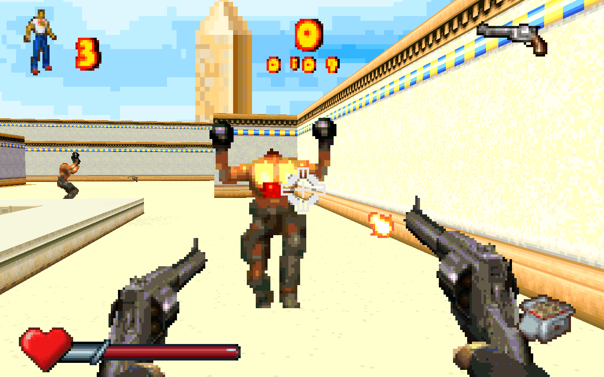

Real campaign systems
Ten playable campaign levels with enemy AI, combat, the weapon set, pickups, hazards, scripted spawns, switches, doors and level exits. Original map data drives the world.
Gameplay evidence ↗NATIVE C / WINDOWS PROTOTYPE
Serious Sam Advance, rebuilt for keyboard and mouse. Original worlds, weapons and enemies meet free mouse look, jumping, third-person viewing and higher-resolution rendering.
Ten campaign levels playable. Full original parity in progress.

THE PORT, TODAY
Original behavior is the foundation.
Free mouse look, WASD movement, Space to jump and H to switch perspective. A perspective-correct renderer scales to your window.
IMPLEMENTED PC ADDITIONS02 / ORIGINAL GAMEPLAYEnemy AI, weapons, pickups, scripted waves and moving doors run natively, with original graphics, music and sound effects.
TEN-LEVEL PROTOTYPE03 / EXPLORE THE WORLDSwitch between the sprite-based atlas and textured 3D geometry. Inspect items, doors and documented secrets across all 16 maps.
2D ATLAS + 3D EXPLORERA playable prototype. An ongoing reconstruction. The first ten campaign levels are playable natively on Windows. Full original feature and behavior parity remains the goal. The final two campaign maps and remaining presentation and game-flow parity still need work.
Features & roadmap →PRESERVE THE GAME / EXPAND THE CONTROLS
What works in the Windows prototype, what PC brings to it, and what still stands between this build and a complete port.
IMPLEMENTED
Ten playable campaign levels with enemy AI, combat, the weapon set, pickups, hazards, scripted spawns, switches, doors and level exits. Original map data drives the world.
Gameplay evidence ↗Keyboard and mouse input, free vertical look, jumping, and an H-toggle third-person camera with collision. Window-size rendering and a selectable render resolution, including 4K.
Controls and rendering ↗Original title and menus, difficulty selection, pre-level map screens, credits, saved unlocks and passwords. English, German and French options, plus a native music and sound mixer.
Progress and saves ↗AT YOUR FINGERTIPS
ROADMAP / REMAINING WORK
Priorities, without release-date promises.
Validate Praetorian Fort with both its standalone loadout and carried inventory, then complete the final map’s natural boss progression. These maps remain unavailable in the native level selector.
Bring the original continue and death flows, NETRICSA, scores, interchapter screens and remaining menu and presentation behavior up to the original game’s standard.
Refine audio fidelity, integrate the remaining original multiplayer behavior, and keep validating full progression and timing. Multiplayer components exist; a playable multiplayer mode is still unfinished.
Status snapshot: 17 October 2026. Implemented features describe the prototype; they are not a claim of complete original parity. Detailed porting record ↗
NETRICSA / WORLD EXPLORATION
NEURO-ELECTRONIC FIELD INTELLIGENCE
Know the world. Meet the opposition. Pick your weapon.
CONNECTING TO NETRICSA
SOURCE AVAILABLE / NATIVE WINDOWS BUILD
The repository contains the native runtime, Windows frontend, recovery sources, tests, research and this website. Game logic runs natively; the original ROM supplies asset data.
git clone https://github.com/ZynChroMaTiK/ss-advance-decomp.git
cd ss-advance-decomppowershell -NoProfile -ExecutionPolicy Bypass -File scripts/build-windows.ps1orig/SSA.gba, then run play-native.cmd.The ROM is needed to play and run original-routine comparisons; compilation does not require it.
Full setup, controls and requirements →Recovered routines are compared against the original ROM. Native integration checks cover real maps, ownership, callbacks, progression, and memory safety.
The current ten-level normal-input campaign chain completes in 117,841 frames; GCC sanitizer and Windows MSVC runs agree on the results.
Read the porting record →PROJECT REFERENCE
Project snapshot: 17 October 2026. The browser tools are exploration aids. Build the Windows application to play the native prototype. The original ROM, saves and local build outputs are not distributed.